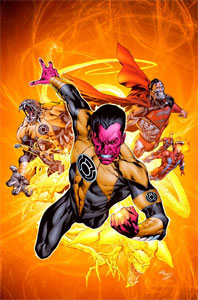

The Guardians of the Universe
The Guardians are a race of immortals that have settled on the planet Oa and declared themselves Guardians after one of their own performed a forbidden experiment that was said to unleash evil itself. The Guardians are as old as the universe and they are very powerful, noble, and extremely intelligent. But, they are also arrogant and stubbornly committed to ancient traditions. They were the ones that created the Green Lantern Corps three billion years ago and endured several rebellions, murders, and collapses. They have divided the universe into 3600 "sectors" and assigned two natives of each sector to serve as Green Lantern there. Hal Jordan and John Stewart are currently the two Green Lanters of Earth and serve in what is called Sector 2814.
Creation of the Green Lantern Corps
At first, the Guardians tried to fight evil with robotic sentinels they created and called the Manhunters. After the Manhunters grew tired of service, they rebelled in a war that lasted an entire millennium. The Guardians were successful in taking away the robots' power and therefore created a new force that consisted of living beings with strong morals and character. The Guardians then created power rings to give to their new intergalactic police force that were only limited by strength and willpower.
The Oath
In brightest day, in darkest night,
No evil shall escape my sight
Let those who worship evil's might,
Beware my power...Green Lantern's light!
This oath was made by every Green Lantern prior to official membership of the Green Lantern Corps. Upon membership, each Green Lantern is given a power ring, a power battery, in the shape of a lantern where the ring is recharged, and a uniform. The oath is also recited when a Green Lantern recharges his/her ring. It is not required but often said to reaffirm the person's commitment to the Green Lantern Corps.
The Sinestro Corps
 Created by the rogue Green Lantern Sinestro, Sinestro created his own version of the Green Lantern Corps called the Sinestro Corps. The Sinestro Corps are a group of supervillians that instill great fear to others. Like the Green Lanterns, Sinestro assigned two ring bearers to each of the 3600 sectors of the universe. Instead of green rings though, Sinestro uses yellow rings. A great war takes place in which Earth is used as the battleground. The Sinestro Corps manage to attack Oa and inflict heavy losses on the Green Lanterns as well as release some prisoners held there. Eventually, the Green Lanterns call upon their allies and defeat the Sinestro Corps through sheer numbers.
Oa
Home to the Guardians of the Universe, Oa was once a barren planet. But, it was reconstructed by the Guardians to hold such features as a great hall for meetings, training facilities for recruits, prisons for especially dangerous criminals, and tombs for fallen Green Lanterns. Oa also holds a central battery also in the shape of a lantern. This is similar to the lanterns each Green Lantern is given but it is the source of those lanterns and it transmits its energy to each individual one so that the power rings can be recharged. It is also the source of the Guardians' power themselves. This is why the central battery can magnify a Green Lantern's powers many times. Oa is now surrounded by an armored structure that protects the planet and its contents.